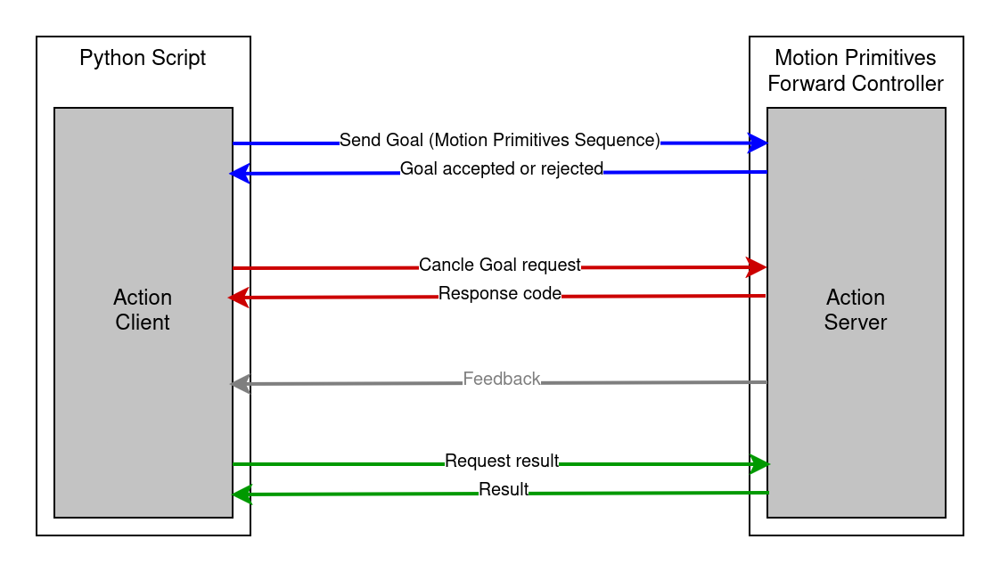
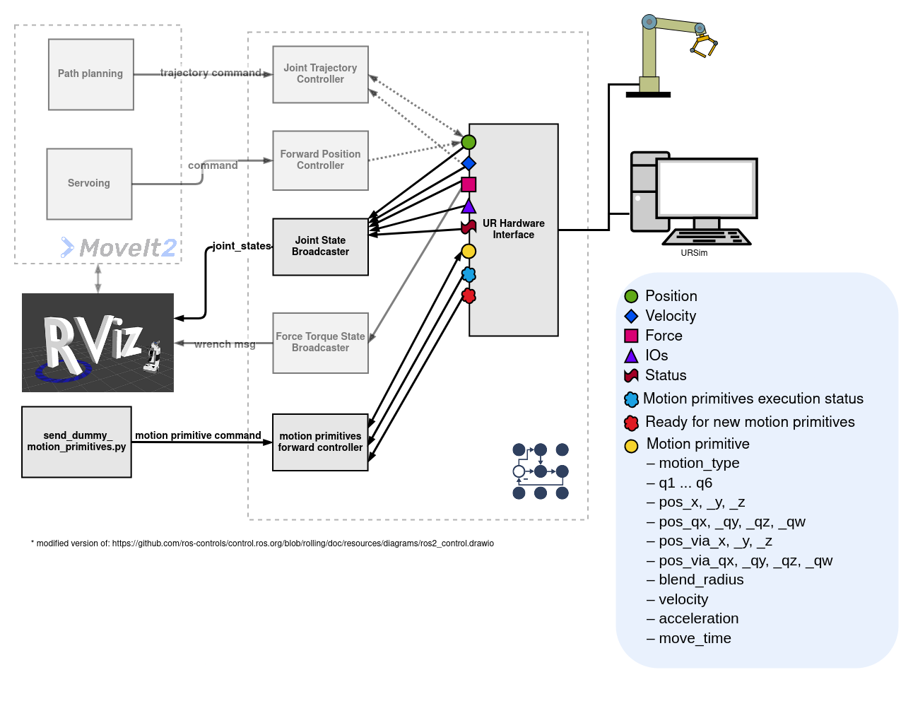
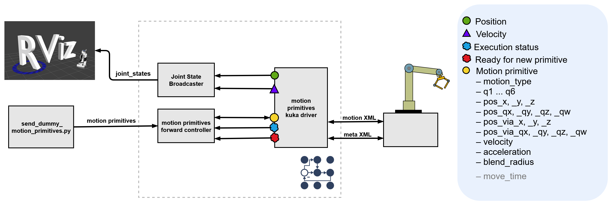

You're reading the documentation for a development version. For the latest released version, please have a look at Jazzy.
motion_primitive_controllers
Package to control robots using motion primitives like LINEAR_JOINT (PTP/ MOVEJ), LINEAR_CARTESIAN (LIN/ MOVEL) and CIRCULAR_CARTESIAN (CIRC/ MOVEC)
Description
This project provides an interface for sending motion primitives to an industrial robot controller using the ExecuteMotionPrimitiveSequence.action action from control_msgs. The controller receives the primitives via the action interface and forwards them through command interfaces to the robot-specific hardware interface. Currently, hardware interfaces for Universal Robots and KUKA Robots are implemented.
Supported motion primitives:
LINEAR_JOINTLINEAR_CARTESIANCIRCULAR_CARTESIAN
If multiple motion primitives are passed to the controller via the action, the controller forwards them to the hardware interface as a sequence. To do this, it first sends MOTION_SEQUENCE_START, followed by each individual primitive, and finally MOTION_SEQUENCE_END. All primitives between these two markers will be executed as a single, continuous sequence. This allows seamless transitions (blending) between primitives.
The action interface also allows stopping the current execution of motion primitives. When a stop request is received, the controller sends STOP_MOTION to the hardware interface, which then halts the robot’s movement. Once the controller receives confirmation that the robot has stopped, it sends RESET_STOP to the hardware interface. After that, new commands can be sent.

This can be done, for example, via a Python script as demonstrated in the example python script in the Universal_Robots_ROS2_Driver package.
Command and State Interfaces
To transmit the motion primitives, the following command and state interfaces are required. All interfaces use the naming scheme tf_prefix_ + "motion_primitive/<interface name>" where the tf_prefix is provided to the controller as a parameter.
Command Interfaces
These interfaces are used to send motion primitive data to the hardware interface:
motion_type: Type of motion primitive (LINEAR_JOINT, LINEAR_CARTESIAN, CIRCULAR_CARTESIAN)q1–q6: Target joint positions for joint-based motionpos_x,pos_y,pos_z: Target Cartesian positionpos_qx,pos_qy,pos_qz,pos_qw: Orientation quaternion of the target posepos_via_x,pos_via_y,pos_via_z: Intermediate via-point position for circular motionpos_via_qx,pos_via_qy,pos_via_qz,pos_via_qw: Orientation quaternion of via-pointblend_radius: Blending radius for smooth transitionsvelocity: Desired motion velocityacceleration: Desired motion accelerationmove_time: Optional duration for time-based execution (For LINEAR_JOINT and LINEAR_CARTESIAN. If move_time > 0, velocity and acceleration are ignored)
State Interfaces
These interfaces are used to communicate the internal status of the hardware interface back to the motion_primitives_forward_controller.
execution_status: Indicates the current execution state of the primitive. Possible values are:IDLE: No motion in progressEXECUTING: Currently executing a primitiveSUCCESS: Last command finished successfullyERROR: An error occurred during executionSTOPPING: The hardware interface has received theSTOP_MOTIONcommand, but the robot has not yet come to a stop.STOPPED: The robot was stopped using theSTOP_MOTIONcommand and must be reset with theRESET_STOPcommand before executing new commands.
ready_for_new_primitive: Boolean flag indicating whether the interface is ready to receive a new motion primitive
Architecture Overview
Architecture for a UR robot with Universal_Robots_ROS2_Driver in motion primitives mode.

Architecture for a KUKA robot with kuka_eki_motion_primitives_hw_interface.

Demo-Video with UR10e
Demo-Video with KR3
Parameters
This controller uses the generate_parameter_library to handle its parameters. The parameter definition file located in the src folder contains descriptions for all the parameters used by the controller.
- tf_prefix (string)
All interfaces use the naming scheme tf_prefix_ + motion_primitive/<interface name>
Read only: True
Default: “”
An example parameter file for this controller can be found in the test directory:
test_motion_primitives_forward_controller:
ros__parameters:
tf_prefix: ""